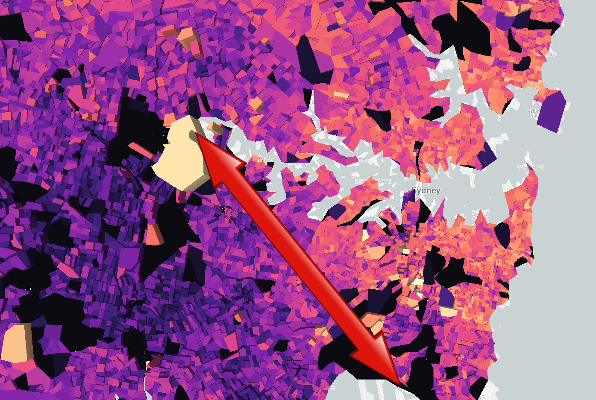

Languages Spoken
Languages Spoken by People that Moved to NSW from Overseas
It is interesting that people of certain nationalities seem to congregate into similar areas. The dataset that is being analysed provides data on the language(s) that people speak who have moved to NSW from overseas. The 3D map displayed below shows provides two sets of information. the colour of the map shows the the intensity of of people which speak only English that have moved to NSW from overseas. The lighter colours are where there are a lot of people who only speak english whilst the darker colours show where there are less people who speak english only. From this data we can clearly see that the majority of people that speak english only that have moved to NSW from overseas live around the Eastern and North-Eastern area of Sydney.
The vertical heights of the extrusions from the map display the intensity of people who speak english not well or not at all, but also speak another language. The higher the extrusions are on the map the more people there are in an area that dont speak english at all or not very well, but speak another language. From the extrusions of this map it is clear that people who are not very good at english tend to live in the Western and South-Western areas of Sydney.
What can be taken from the information provided above is that there is a clear divide in the people who speak english only and those who aren't fluent in english and speak another language. In the map provided above there also seems to be a latte line formed. This suggests that people who are english speakers are more favoured when it comes to getting a high income job. To further analyse whether this latte line exists an analysis of the weekly household income was conducted.
